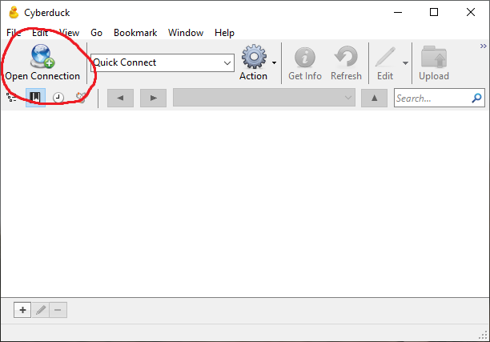
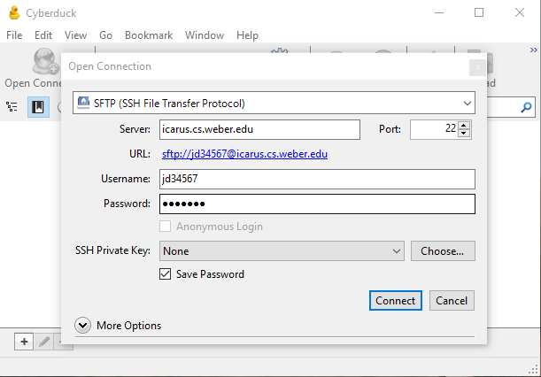
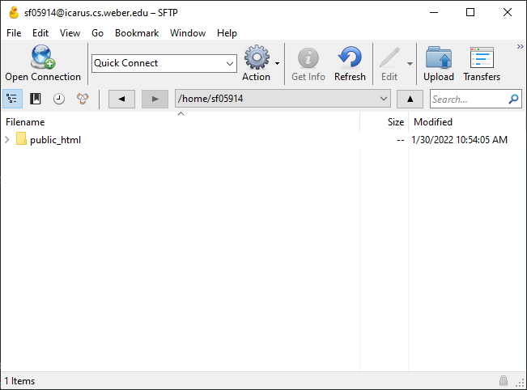
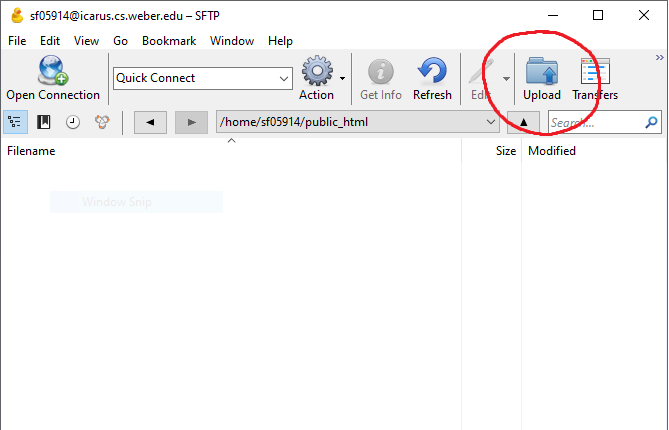
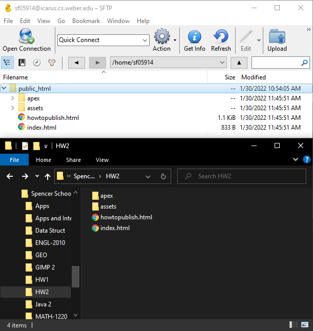

First you'll want to download cyberduck.io so you can transfer your files securly to the public server. You can download it here for free.
Once you've downloaded that program, run it and then click the "Open Connection" button in the top left hand corner.
Once you've clicked "Open Connection" Cyberduck will ask you what server you're trying to connect to. First you'll need to specify the protocol you're using. In the drop down list at the very top, select the "SFTP (SSH File Transfer Protocol)" option. Then in the "Server:" box type "icarus.cs.weber.edu" and set the "Port" option to "22". Next you'll need to enter the username and password that Weber State has provided you. Your username will be your initials followed by the last 5 digits of your W# (John Doe - jd34567). Your password will be your full first name followed by 'cs!' (John Doe - Johncs!). Make sure to capitalize your name in the password or else it won't work! Once you have all of your information entered correctly click the "Connect" button at the bottom right.
Now that you've entered your information and logged in, we need to upload our files to the server! You're page will look like this now. You'll notice we have a file in the window called "public_html". You need to double click on this file to navigate into it.
Awesome! You're doing great. Now you need to click on the "Upload" button in the top right hand corner. Find the files you want to upload in the popup window, highlight them, then click "Choose". You can upload whole folders or just one file at a time using this method.
Here's a side by side comparison of my local file explorer and Cyberduck after I uploaded all of my files. Make sure you don't forget to upload any files or your site won't work as intended.
Accessing your website is easy, you just need to compose a proper URL in a web browser of your choice. These URLs will contain a protocol, hostname, username, path, and filename. The protocol and hostname will always be the same but the username and so on will cange depending on what page you access. I'll give some examples and you'll see what I mean.
https://icarus.cs.weber.edu/~sf05914/ (This URL will go to the index of the "public_html" folder which is the highlighted "index.html" file in the image below.)
https://icarus.cs.weber.edu/~sf05914//howtopublish.html
https://icarus.cs.weber.edu/~sf05914//apex/index.html